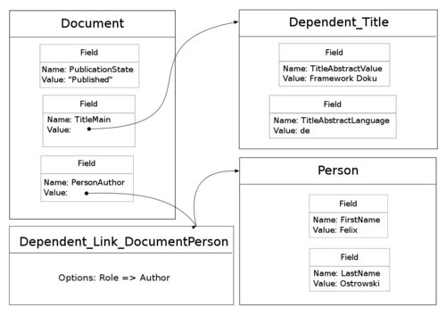

protected $_tableGatewayClass = 'Opus_Db_Foobar'; (1)
Eine Anforderung an Opus ist eine sehr flexible Bereitstellung von verschiedenen Dokumenttypen. Das Dokument ist ein komplexes Gebilde und durch eine sehr heterogene Datenstruktur charakterisiert, die sich über mehrere Tabellen erstreckt und in diesen je nach Dokumenttyp verschiedene Felder besetzt.
Das Hauptanliegen von Opus_Model ist es, nicht nur Dokumente, sondern alle relevanten Entitäten (Dokumente, Collections, Personen, Lizenzen) hinter einem einheitlichen Interface zu kapseln, und zwar unabhängig davon, wie die tatsächliche Tabellenstruktur dahinter aussieht. Der Ansatz orientiert sich damit am Domain model pattern.
At its worst business logic can be very complex. Rules and logic describe many different cases and slants of behavior, and it's this complexity that objects were designed to work with. A Domain Model creates a web of interconnected objects, where each object represents some meaningful individual, whether as large as a corporation or as small as a single line on an order form.
Die Mindestanforderung an ein Opus Modell ist das Implementieren des Interfaces Opus_Model_Interface. Dies sollte vor allem dann geschehen, wenn die gesamte Datenbanklogik, die die abstrakte Klasse bereitstellt, nicht genutzt werden soll. So ist es geplant, die Opus_Collection Komponenten, welche sich um jegliche Datenbanklogik selber kümmern, durch ein Opus_Model Interface zu tunneln.
Eigenständige, datenbankgebundene Modelle wie Dokumente, Personen und Lizenzen erben von Opus_Model_Abstract. Sie erben damit eine weitreichende Speicherlogik, die sich über das Konzept von "externen" Feldern über die eigene Tabelle hinaus erstreckt. Zu diesem Zweck werden über externe Felder abhängige Modelle eingebunden.
Abhängige Modelle sind dadurch gegekennzeichnet, dass sie ohne ein Elternmodell keine "Daseinsberechtigung" haben. Dies sind etwa Titel, Abstracts und Identifier. Sie erben von Opus_Model_DependentAbstract. Es besteht desweiteren die Möglichkeit, durch erben von Opus_Model_Dependent_Link_Abstract andere eigenständige Modelle zu referenzieren. Das Feld enthält dann einen "Tunnel" zum referenzierten Modell, d.h. es ist wie ein eingebundes abhängiges Modell adressierbar.
Jedem Opus_Model ist eine primäre Tabellenzeile zugeordnet. So hat etwa ein Opus_Model_Document als primäre Tabellenzeile eine Zend_Db_Tablerow aus Opus_Db_Documents. Diese primäre Tabellenzeile wird beim Initialisieren gesetzt: entweder auf einen bestehenden Eintrag (wenn eine ID übergeben wird), oder auf einen neuen Eintrag. Sie enthält alle "internen" Felder des Modells.
Um Attribute setzen und abrufen zu können, verfügen Opus Modelle über Felder (Opus_Model_Field). Durch das Anhängen eines Feldes an ein Modell verfügt dieses automatisch über get/set/add Methoden für dieses Feld.
Ein Feld hat wiederum eigene Attribute:
Einen Namen: Opus_Model_Field::__construct
Angaben zur Multiplizität: Opus_Model_Field::set/getMultiplicity()
Angabe, ob es sich um ein Pflichtfeld habdelt: Opus_Model_Field::set/getMandatory()
Filter: Opus_Model_Field::set/getFilter()
Validatoren: Opus_Model_Field::set/getValidator()
|
Note
|
Validatoren und Filter, die so heißen wie ein Feld, werden diesem automatisch zugewiesen. Verzeichnisse, in denen nach Validatoren und Filtern gesucht wird, können über $_validatorPrefix und $_filterPrefix gesetzt werden. Standardmäßig wird in Opus/Validate und Opus/Filter gesucht. |
Für den Inhalt eines Feldes bestehen grundsätzlich zwei Möglichkeiten: entweder handelt es sich um atomare Werte wie Zahlen und Zeichenketten ("interne" Felder) oder es handelt sich um weitere Opus Modelle ("externe" Felder).
Auch wenn Opus_Model von der Tabellenstruktur abstrahiert, liegt jedem Modell eine Tabelle (Opus_Db_*) - genauer: eine Zeile aus einer Tabelle - zugrunde, aus der eine Modellinstanz ihre internen Felder, darunter auch ihre Id, bezieht. Welche Tabelle dies ist, wird in der Variable $_tableGatewayClass festgelegt.
protected $_tableGatewayClass = 'Opus_Db_Foobar'; (1)
Definition der Ursprungstabelle der primären Tabellenzeile.
|
Important
|
Feldnamen
Interne Feldnamen sind nicht beliebig, da über sie einige automatische Mechanismen angestoßen werden. "Interne" Felder tragen die CamelCase-Übersetzung der entsprechenden Tabellenspalte, d.h. der Feldname "FirstName" wird automatisch übersetzt in "first_name" und stellt den Zugriff auf dieses über getFirstName() und setFirstName() bereit. Dieser Mechanismus führt teilweise zu etwas unschönen Methodennamen wie etwa "getTitleAbstractValue" und "getTitleAbstractLanguage" für die entsprechenden Spalten der document_title_abstracts Tabelle. Es gibt zwei Möglichkeiten, dies zu beheben: entweder werden die Spalten umbenannt, oder es wird ein Übersetzungsmechanismus eingebaut, der Feldnamen auf Datenbankspalten abbildet. Opus_Model versucht, einen "Convention over Configuration" Ansatz zu verfolgen. Aus dieser Perspektive wäre der erste Ansatz vorzuziehen. |
Internen Feldern liegt ein Attribut der primären Tabellenzeile zugrunde, daher haben sie implizit stets eine Multiplizität von 1. Es gibt jedoch einen Mechanismus, das Speichern und Abfragen von Feldwerten zu beeinflussen.
class Opus_Model_Foobar
{
protected $_tableGatewayClass = 'Opus_Db_Foobar'; (1)
protected function _init() { (2)
$languages = new Opus_Model_Field('languages');
$languages->setMultiplicity(3);
$this->addField($languages);
}
protected function _storeLanguages() { (3)
$value = implode(',', $this->_fields('languages')->getValue());
$this->_primaryTableRow->languages = $value;
}
protected function _fetchLanguages() { (4)
$value = explode(',', $this->_primaryTableRow->languages);
return $value;
}
}
Die internen Felder des Modells beziehen sich auf die Tabelle Opus_Db_Foobar.
Das Modell bekommt ein Feld Namens languages mit einer Multiplizität von drei. Es ist nicht als extern gekennzeichnet und wird daher auf eine Spalte in Opus_Db_Foobar abgebildet. Diese kann jedoch naturgemäß nur einen atomaren Wert enthalten.
Die standard Speicherlogik des languages Feldes wird überschrieben. Die multiplen Werte werden zu einem CSV-String umgeformt und in der primären Tabellenreihe abgelegt.
Die standard Abfragelogik des languages Feldes wird überschrieben. Der CSV-String wird in ein Array zerlegt und zurückgeliefert.
Felder, die sich nicht auf eine Spalte in der primären Tabellenzeile beziehen, müssen im Array $_externalFields als solche gekennzeichnet und mit einer Opus_Model_Dependent Klasse versehen werden. An dieser Stelle können auch einschränkende Bedingungen angegeben werden. So können etwa in einer Tabelle Titel und Abstracts zusammen abgespeichert werden, und für Title und Abstract trotzdem eigene Modelle existieren. Die Speicher- und Abruflogik eines externen Feldes kann ebenso wie die eines internen Feldes überschrieben werden.
Wenn ein Opus Modell als Feldinhalt in einem anderen Opus Modell enthalten ist, bestehen, wie bereits erwähnt, zwei Möglichkeiten: entweder, es handelt sich um ein direkt abhängiges Modell, oder um ein verlinktes Modell.
protected $_externalFields = array(
'ExternesFeld' => array(
'model' => 'Opus_Model_Dependent_Foobar', (1)
'options' => array('foo' => 'bar') (2)
),
'VerlinktesFeld' => array(
'model' => 'Opus_Model_Dependent_Link_Foobar' (3)
),
);
Ein abhängiges Modell wird in ein externes Feld eingebunden…
…aber nur, wenn in der primären Tabellenzeile des abhängigen Feldes die Spalte foo den Wert bar hat.
Ein verlinktes Modell wird in ein externes Feld eingebunden. Auf welches Modell der Link letztlich verweist, ist in der angegebenen Modellklasse festgelegt.
Link-Modelle sind stets gerichtet, es muss also ein Dependent_Link_DocumentLicence Modell existieren, um vom Dokument auf die zugehörige(n) Lizenz(en) zugreifen zu können, und ein Dependent_Link_LicenceDocument, um von einer Lizenz auf alle Dokumente, die unter ihr veröffentlicht sind, zu erhalten. Dies ist dem Domain model pattern geschuldet: es handelt sich um unterschiedliche Beziehungen, auch wenn auf Datenbankebene nur eine Tabelle vorhanden ist.
Der Aufbau der Modelle ist nicht überraschend, ist er doch an tatsächlich existierenden Tabellen orientiert. Opus_Model stellt jedoch kurze, rein objektorientierte Zugriffs- und Speichermöglichkeiten bereit, für welche keinerlei Kenntnis der Tabellenstruktur nötig ist.

$document = new Opus_Model_Document; (1)
$document->setPublicationState('published'); (2)
$title = new Opus_Model_Dependent_Title; (3)
$title->setTitleAbstractValue('Framework Doku');
$title->setTitleAbstractLanguage('de');
$document->addTitleMain($title);
$author = $document->addPersonAuthor(); (4)
$author->setFirstName('Felix');
$author->setLastName('Ostrowski');
$documentId = $document->store(); (5)
Ein Konstruktoraufruf ohne ID-Parameter erzeugt ein neues Modell mit leeren Feldern.
"Interne" Felder werden direkt gesetzt.
"Externe" Felder sind eigenständige Objekte.
Alternative Syntax zum Setzen eines "externen" Feldes.
Das Speichern des Dokumentes zieht das Speichern aller Felder ("intern" und "extern") innerhalb einer Transaktion nach sich.
$document = new Opus_Model_Dokument(1); (1) $document->getPublicationState(); (2) $document->getTitleMain()->getTitleAbstractValue(); (3) $document->getTitleMain()->getTitleAbstractLanguage(); (4) $document->getPersonAuthor()->getFirstName(); (5) $document->getPersonAuthor()->getLastName(); (6)
Ein Konstruktoraufruf mit ID-Parameter erzeugt ein neues Modell, in dem alle Felder entsprechend der Datenbank initialisiert sind.
Ergibt "published".
Ergibt "Framework Doku".
Ergibt "de".
Ergibt "Felix".
Ergibt "Ostrowski".
|
Note
|
Dieser Abschnitt dient als (äußerst knappe) Gedächtnisstütze für Entwickler der Abstrakten Opus_Model Klassen. |
Die primäre Tabellenzeile wird gesetzt.
Felder werden angehängt.
Die Felder werden mit Validatoren versehen.
Die Felder werden mit Filtern versehen.
Der Inhalt der Felder wird gesetzt.
Explizit definierte _fetch Methoden haben Vorrang.
Interne Felder werden direkt aus der primären Tabellenzeile bedient.
Externe Felder werden mit den entsprechenden abhängigen Modellen besetzt.
Eine Transaktion wird begonnen.
Das Model (also die internen Felder) wird gespeichert, so dass die Id den abhängigen Feldern zur Verfügung steht.
Die Modelle in den externen Feldern werden gespeichert
Hier hat wieder eine ggf. vorhandene explizite _store Methode vorrang.
Der Fremdschlüssel der abhängigen Modelle in den externen Felder wird gesetzt.
Die abhängigen Modelle werden (ohne eigene Transaktion) gespeichert.
Die Transaktion wird beendet.